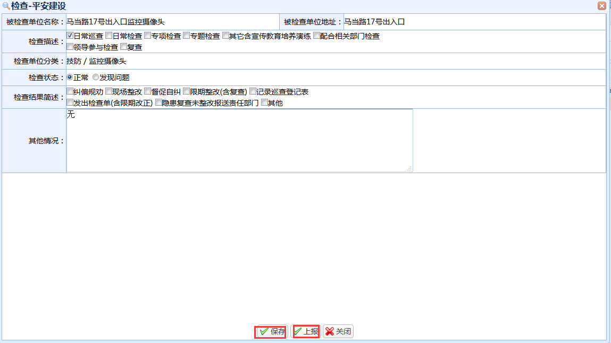

|
操作指南：
1、如何进入监控画面及注意事项。
点击查看按钮进入产看页面，点击技防名称，即可进入监控画面；
注意事项：
a）.必须安装插件：WebComponentsKit.exe（点击可直接下载）
b）.仅支持32位浏览器：Firefox30~Firefox51、IE6~IE11、Chrome31~Chrome44、Safari5.0.2+，需要浏览器支持NPAPI。
c）.插件安装完成后，关闭浏览器重新启动后才能生效

2、点击“新增”按钮，出现技防设施新增页面。
信息填写完成后，点击“保存”按钮进行技防设施信息的保存，操作完成返回列表页面。
3、勾选需要进行检查的部件，单击“检查”按钮。

信息填写完成后，点击“保存”按钮对技防设施信息的检查情况进行提交，
对于检查时发现问题的设施，点击“上报”按钮进行上报，操作完成返回列表页面。
|